We first met on Art Fight of 2023 when you launched an ambush on me first. From that interaction, I could tell that you wanted to be friends. I certainly think you passed the vibe check. You have long been the guy who was there for me when I was going through the trials of hell in 2023 (trying to get over an ex, raging about a shitty friend, lamenting about a sabotaged friendship...). I don’t think I could properly begin to express how grateful I am that you’ve stuck around. You’re like a genuine cousin to me! My cousin that lives in America! Thanks so much for listening to me bitch and complain about shitty people and also just being there for me in general, and providing the virtual shoulder to lean on, from one SEAsian brother to the other.
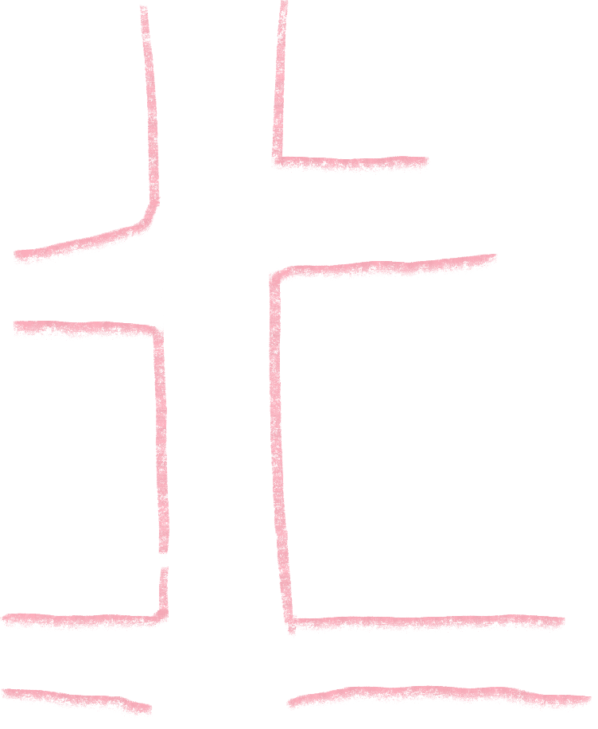
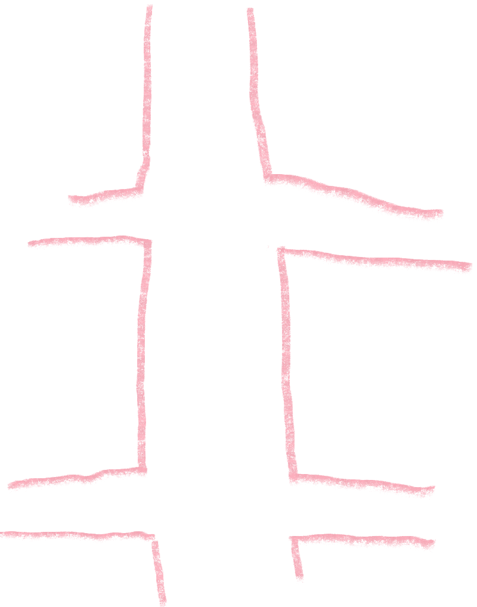
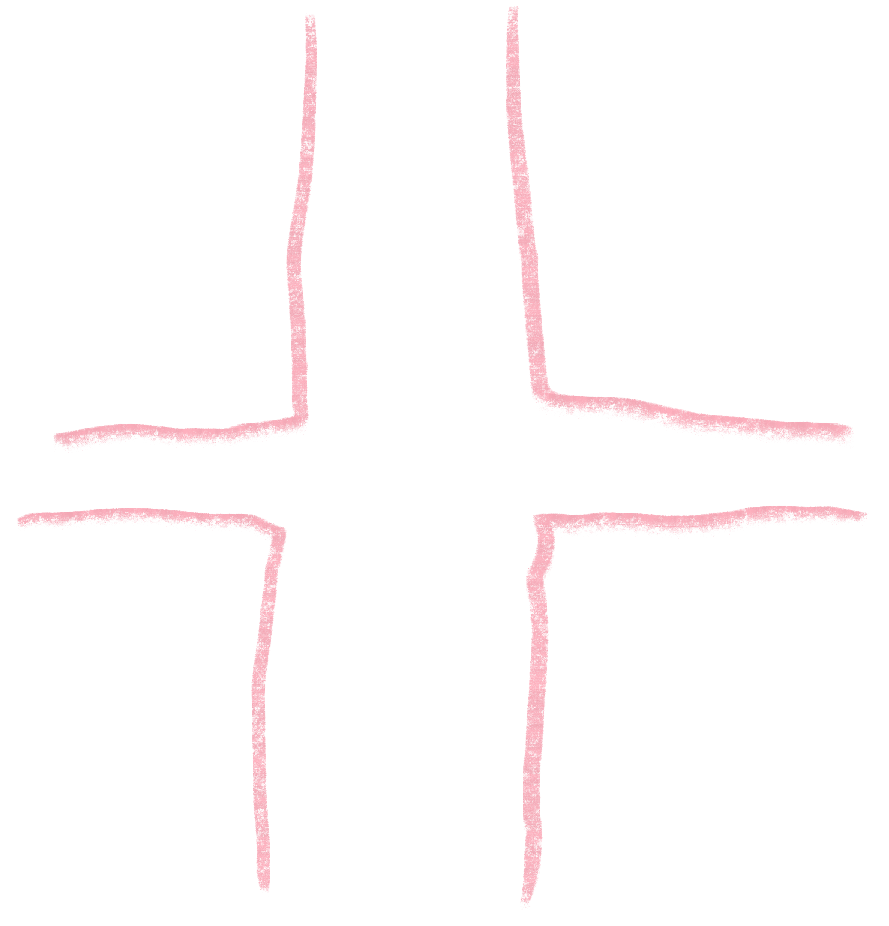
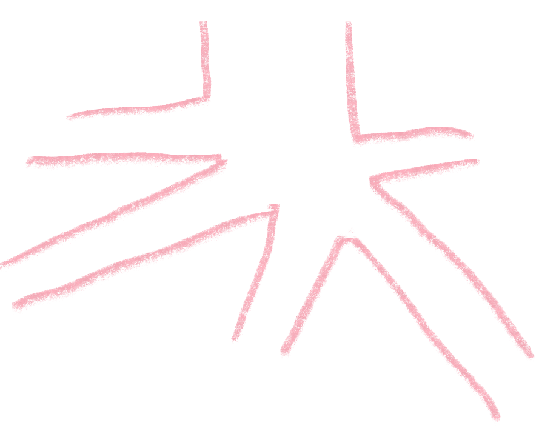
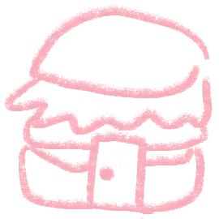
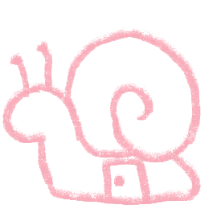
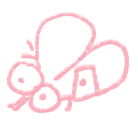
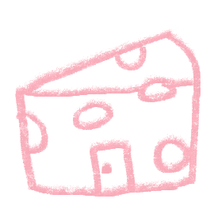
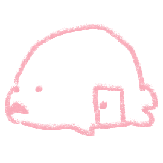
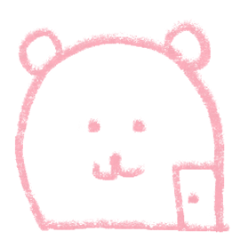
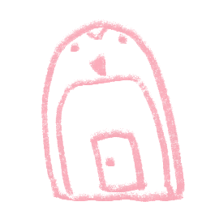
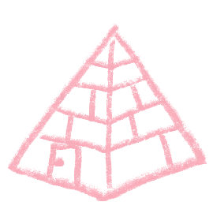
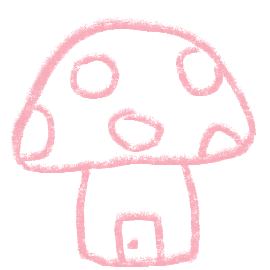
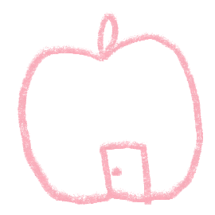
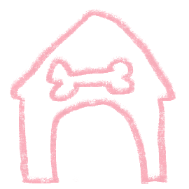
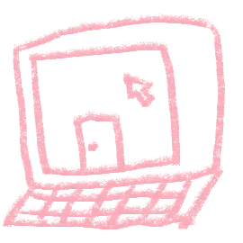
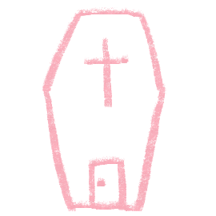
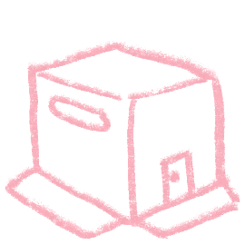
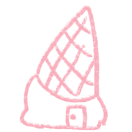
Hi. I think we first followed each other on Instagram late 2022? And by you’re one of the people I click so well with the most. Every conversation I have with you feels like you’re in the room with me — I really truly value you as a friend! You’re one of the most fun people to talk to EVER. Like to be completely honest I haven’t been so close and chatty with anyone else before and chatting with you has just felt so normal and natural, almost like we were destined to be real life 3D friends. As much as I feel weird being vulnerable, you’re one of the few people who I feel more comfortable talking about personal stuff with. That’s a huge thing because I never talk about myself! Together we’re like SpongeBob and Patrick from the infamous children’s television programme SpongeBob SquarePants. I know I can say this for just about everyone, but I wish we didn’t live on opposite ends of the planet. Praying and manifesting you get to visit Australia one day.
Probably my longest online friend! Met in a crazy COVID-era group chat in 2020 of which we both no longer associate with. Throughout the years I’ve always loved to see how your art has developed and changed because it’s something I really adore; from the unique stylisation of people’s features, to the pretty colour combinations you choose (I will never stop admiring the colours in your art). Thank you for sticking around with me through thick and thin for so long, I really appreciate it a lot. I love to learn and chat about the differences between where I live v. living in Southern United States... I think that’s the best part about international friends. You truly are like that white cousin whose parent got married into an Asian family. Also I look at your drawing you did of my character Eliza for 2025 Art Fight a lot. I hope I can learn to stylise character illustrations as well as you do!
From the beginning I adored your art — the first artwork I’ve ever seen from you I believe was that trans Zhou Yu illustration. I loved the colours, subject matter, and the ornateness of your art style. The second ever artwork I saw was the iconic Kyu one (which I thought, amongst many others, was an original character of yours). I kind of freaked out when you followed me, because at first I was shy and scared to follow! That was 2023. You’ve been a pivotal figure in my online friendship sphere and one of the biggest inspirations to my art and art subject matter. I really wish I could just have a big massive framed print of your gay meat art on my wall, the illustration that altered my brain chemistry the most. Also isn’t it crazy that Shu and I were both mutuals with you AND on your server before I even met them at uni?
The Great Pharaoh! We met on El’s server — the first thing I ever learned about you was that you were from all the way on the other side of the country, in Perth. My most down-to-earth Pharaoh with a vast repertoire of grand and ancient knowledge in all things ranging from biology, to the arts, to world politics. An astonishingly talented artist in spite of the many anomalous medical mishaps that plague you. You are like an (nearly) inverse version of me; lives on the west coast instead of the east, Asian on the inside, mysterious stomach acid issues, etc... A memorable moment that will forever live with me is when we as a group all collectively watched you play KCD2 with our mics off except for you — some of the best moments of 2025. I hope god will spare from you your constant Perthian suffering and grant you the opportunity for your pilgrimage to Sydney. Also thanks for putting me onto Ethel Cain, LOL.
An oomf-in-law. I always think about how amusing it was that we met during that fire evacuation in first year (2023) when we were all gathered out behind building 6. I was with Jason, and at the time I didn’t really have any friends besides Jason. We talked for the first time and quickly enough we found out that we were both mutuals with Gabri(el) on Twitter... and also on Gabri(el)’s Discord server... SMALL WORLD HEY!!!! Thanks for kidnapping me so I wouldn’t be alone in uni anymore. My favourite moments were in 3rd year when we would go to do homework in our 3 hour break for about 1.5 hours, go have lunch with Jodie, and then still be nearly late for class. Not gonna lie I wasn’t going to do honours if you weren’t either because you are my lunch buddy forever and I’m still waiting for the chance for us to get Polish food or something. Anyways. ARIGATO SHUCHAN FOR BEING MY FRIEND!!!!! colon three
Balkan brother from another mother. And also another reason to believe that the world (or just Sydney) has a population of 4 people! To think we’d meet online on El’s Discord server, to me visiting you while you’re at work so you can scan my purchases. Chill ass dude, I fuck with you heavy my bro, especially that we’re local too — you just get what it’s like to be from this particular area. One moment I remember is our cultural exchange moment when we taught each other how the letter Đ (D with a dash going through it) was supposed to be pronounced in Croatian and Vietnamese respectively; just another beautiful moment representative of the diversity in our area in Sydney. I also remember when we were on the train home together and we did not exchange a single word to each other because we were chatting on Discord instead. If, and hopefully when, Deki comes to Sydney we all need to crack a couple beers or something.
One of my art idols for I’ve always adored your work ethic and takes on art and art practice (as well as just your art overall, of course). Also one of the most talented people I know — I really, really valued some of the advice and suggestions you gave for my Rayli and Viccharlie drawing, it meant a lot coming from you! You take such an informed approach to your creative practice and this is the sort of work ethic I admire and hope to achieve. I think we became proper oomfs in 2024 when I first joined El’s server, but we were also following each other long before back when I used to draw MXTX fanart and we didn’t realise... The internet is really small after all isn’t it? I still look at the drawings you did of my character Eliza; the Art Fight one and the doodle of her with the bikini top and camo pants. I wish I could have your art seared into my brain or burnished into my eyelids or something.
I need you to understand how much I cherish that time you torrented those Adobe programs for me before I started uni (where at the time I didn’t know how to do that yet). I still, to this day, use those exact same versions of Photoshop, InDesign, and Illustrator. It means a lot to me. I think you are the only person who understands my vitriol towards custom acrylic garbage and disgust towards obsessive-romantics. Your nekoweb site is genuinely one of my inspirations for website stuff (including this website right now), and I refer back to your extensive resources page like it’s my bible. I think we first met on Metal Gear Solid fandom twitter in like, late 2022, and I was really cheesed to have another super cool Australian mutual. I just think it’s really neat to have online friends from Australia! You are actually genuinely for seriousness super fucking cool. If you came to Sydney I’d love to hang because You Are Welcome in My Home in Sydney.
I enjoy every single Laki picture you send us. One memory I have is when you told us about the Lucky Poop Scissors (will not elaborate for external readers). Also thank you for siring me the name “The Great Khan”, and thank you for all the morally questionable Instagram reels you send me that end up getting taken down if I go back to check them a day later. One moment I’ll always think about is when I woke up to that drawing you did of Raymond and Eli and the following comic which shattered my heart because it’s like you read into the depths of my brain and found a way to make me cry. Its so amazing. Also love love love your art and your approach to rendering and drawing faces and I want to see more of it always. Also. You are also just very kind to me even when you use NotSoBot to search “.img fat genshin art” in my OC channel.
Dzień dobry Darek 🐧 You're genuinely so friendly to me LOL and I fuck with your
art so hard. Please post your art more please please please please. I really enjoyed you
sharing your experiences in your graphic design class with your fucked up ABCDEFG school
keyboard and visually stunning typographic design work. And also thank you for observing me
pepper in random Polish words that you and Sasza taught me because I value cultural
exchange. As I’m writing this, Jakob and I are currently on a mission to get you a bunch of
stuff to mail to you and Sasza all the way in Poland. I hope one day your dreams of becoming
Australian will be fulfilled, as we will happily accept you into our open arms.
AFTERWORD: you had a dream about my friendship letters where on yours I wrote big dick
energy. I will affirm that dream: darek big dick energy.
Dzień dobry Sasalele 🍎 Thank you for teaching me important Polish words and phrases (such as dzien dobry, do widzenia, tak, nie, kupa, japuszko) so I can practice using them between you and Darek. Thanks for getting me to watch the 2022 Interview With the Vampire TV show because I loved it so much more than the movie from 1994. I remember first commissioning you to draw my character Eliza, and then doing it again, and then doing it again. It’s an amusing memory to me; makes me wonder what you felt about being paid to draw Eliza three times back-to-back. Also; cannot thank you enough for the VGen code! You are also genuinely really sweet to me lalala. (flashes my vampire fangs at you as a sign of respect)
I mean this with every single bone and cell in my body, you are one of the most talented friends I have and I look up to you as a creative. You are so masterful in your creative work. The way you’re able to have so much consistent, high-quality creative output for Lament is insane(ly commendably). Everything from the Lament games, to the comics, to the music soundtracks, have been nothing short of a massive influence over what I want to achieve with my own work. Not only that, you are so KIND and FRIENDLY and I truly cherish every compliment you give on my work and how observational you are. I don’t think I can begin to articulate how inspiring you are to me and everyone else. You’re like a mythical figure in our friend group, only popping in every now and then but blessing us with your fine wisdom. (howls to show my respect to you)
(Sprays noxious powder in your face) Your passion and dedication you pour into your projects is extremely commendable. INCREDIBLY badass in your character and comics creation, animation, game development, music production, pierogi making. One thing I remember was watching you knead dough to make pierogi on a video call. It was like a livestream from another world — and the frown painted on your face when Deki left the video call. Another amusing thing I remember was that picture of that random mushroom that was growing in your humid Philippines house (Bugsy side hustle). Bruce lore runs deep but in the end Bruce is our McDonalds moon profile picture in the night sky, smiling on us all like a guiding light to the grace of God.
One of my first few mutuals when I migrated to Twitter in 2022 and started being into Metal Gear Solid (AKA a pivotal moment in my own life). Thank you for sticking around with me for this long! I’ve long admired how well you’ve managed to curate your red-and-black aesthetic, with the lovely outfits to match. My most locked in oomf, I aspire to be as productive and work-driven as you! We love to see you pop around here and there to update us on your life. You make me wanna pick my ass up and succeed. Cheers for being so kind and cool (heh... the kind kyne... the kynd...) (muscle emoji muscle emoji muscle emoji flames emoji philippines flag emoji philippines flag emoji)